CERTUS
In preparationA rover that drives only on ground it has certified under its own sensing uncertainty, and looks where it must to certify more; Isaac Sim first, then a real rover.
I build the simulation, perception and planning stacks that let field robots drive on ground nobody has mapped.
BSc Computer Science, BRAC University, Dhaka. Expected graduation January 2027. Applying for Fall 2027 PhD programmes.
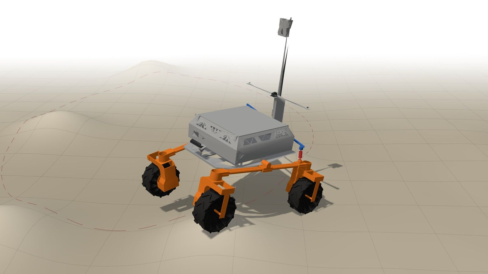
My work runs along three lines: uncertainty-aware navigation for planetary and field rovers (CERTUS, the BARN challenge, the BRACU Mongol-Tori Mars rover), event-based vision for agile multi-robot teams (COVE, evs-bench, hifi-environment-builder), and datasets for the dense, unstructured traffic of South Asian cities (DhakaSense).
What ties them together is simulation that can be trusted as ground truth: environments with exact labels, pinned renderers and reproducible builds, so a result in the simulator means something on the rover.
A rover that drives only on ground it has certified under its own sensing uncertainty, and looks where it must to certify more; Isaac Sim first, then a real rover.
Event-camera UAV teams deciding what to tell which teammate, built on five industrial environment families with exact label geometry in Unreal Engine 5.
A 3-D driving dataset and density-stratified benchmark for the dense, mixed traffic of Dhaka, from a low-cost LiDAR, stereo and six-camera rig.
Listed by title only: no PDFs, and no figures, from manuscripts under review or in preparation. No author lists for unpublished work.
Five-seed, budget-matched comparison of a probe-based rank allocator against uniform-rank LoRA, LoRA and GoRA on eight commonsense tasks across three decoders plus 11 of 24 GLUE cells; the allocator trails the matched control in 26 of 35 cells.
14 h 35 min across 175 scenes from a Livox Mid-360, stereo depth, six RGB cameras and post-processed GNSS/INS, with CNG auto-rickshaws and cycle rickshaws as 3D classes and every metric reported per traffic-density level.
A rover drives only on ground it has certified: step, slope and body clearance pass with a distribution-free margin on the map's own uncertainty; a decidability rule predicts which depth sensor can certify which rover; when nothing ahead is certified, active perception picks the viewpoint that resolves the most blocking cells per second. Validated in Isaac Sim before deployment on a real rover.
The first collaborative-perception system whose shared representation is event-derived, with a counterfactually supervised, recipient-specific gate deciding what crosses the link; simulation study in Unreal Engine 5.8 / Cosys-AirSim.
Five industrial environment families with seeded layouts, exact label geometry, QC gates and rule-breaking hazard speeds, captured with event and RGB cameras.
Sim-first research stack behind CERTUS: ZED 2i stereo depth through elevation_mapping_cupy to slope, roughness and uncertainty layers; TOPP-RA (cvxpy) velocity profiles whose limits vary along the path; Isaac Sim 6.0.1 scenes for Clearpath Husky, Jackal and Warthog; a ROS 2 Jazzy container; and a staged, idempotent setup script that pins every dependency by checksum and fails unless it reproduces the reported run.
Full classical autonomy stack for the ICRA BARN Challenge (Clearpath Jackal, 2-D LiDAR, hidden obstacle worlds): online occupancy and distance field, A*, elastic band, sequentially linearised MPC solved as a QP at 30 Hz, safety shield, recovery; ROS 2 Jazzy, C++; a 500-trial campaign protocol on the BARN 2026 public 50-world suite; a nine-chapter tutorial and a live site with seven interactive demos.
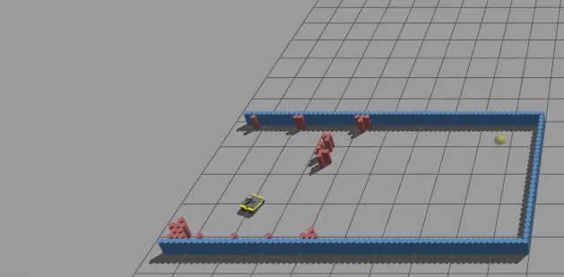
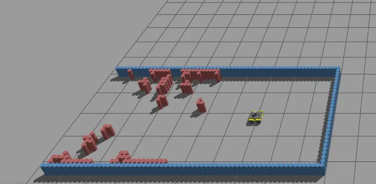
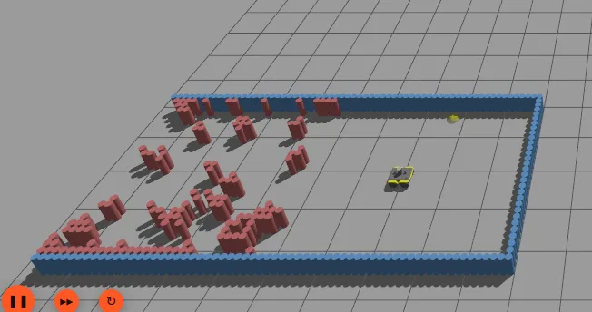
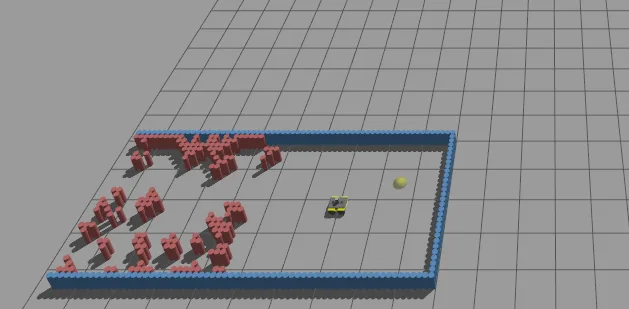
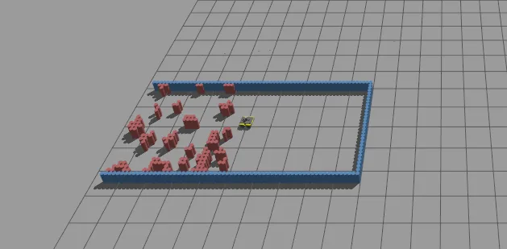
Python toolkit and Claude Code skill that builds label-correct, sensor-clean, licence-clean, reproducible simulation environments for Unreal Engine 5 / Cosys-AirSim and Isaac Sim / USD from CC0 and CC-BY assets with provenance; parity, null-test and licence gates; 289 tests.
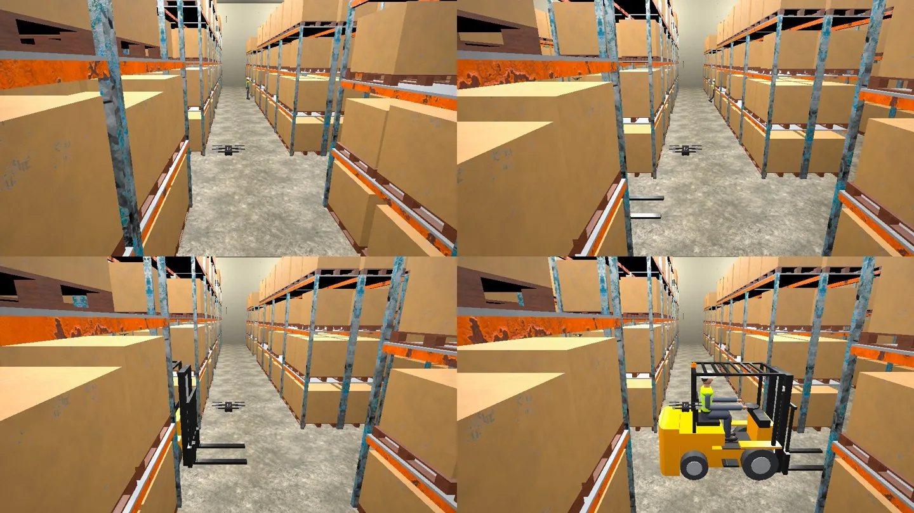
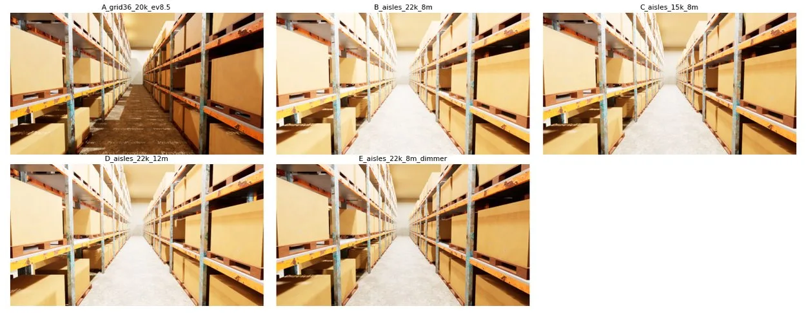
Event-based surveillance benchmark tooling: corrected ESIM event synthesis, class-agnostic RGB and event detector baselines, dt-aware SORT tracking and a time-to-first-detection metric; now the capture infrastructure behind COVE. Private repository.
A closed-loop rocker-differential rover taken from Fusion 360 into PyBullet and Gazebo Classic: the loop stays closed to 0.003 mm in PyBullet, dead points found at −21.5° and +40° of rocker travel with ±15° hard stops recommended, skid versus ±90° steering compared on Apollo 15 terrain.
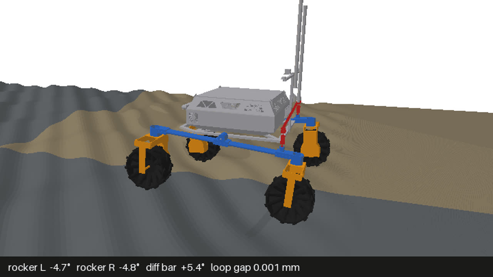
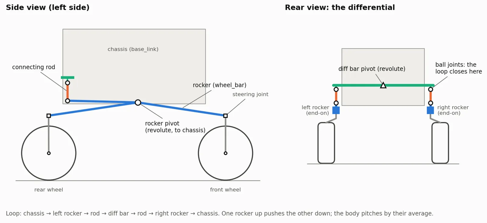
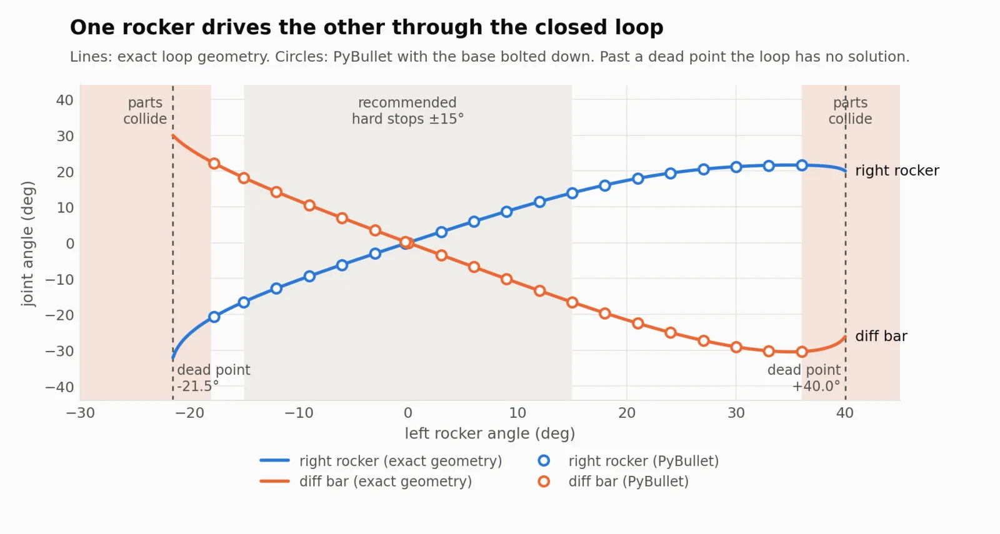
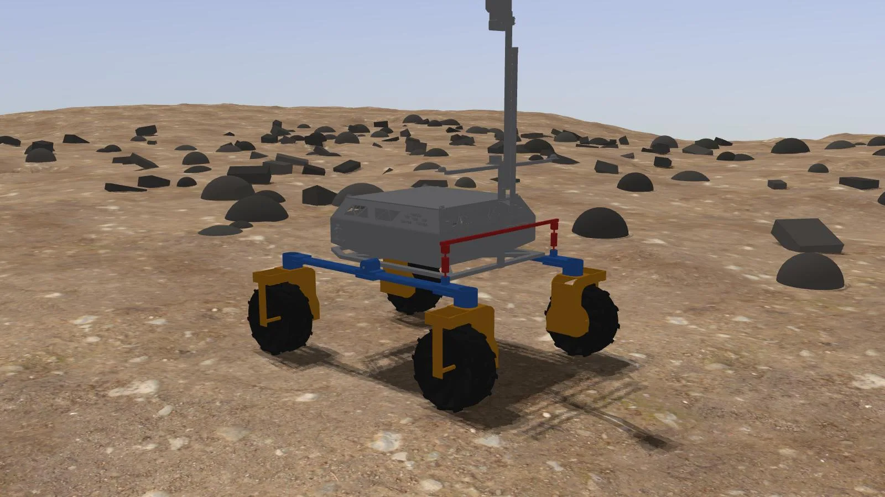
Bidirectional multi-heuristic hybrid A* for Ackermann and differential-drive vehicles: parallel 2-D Dijkstra heuristics in C++17 via pybind11, clearance-aware path simplification and Bézier smoothing that respects the minimum turning radius.
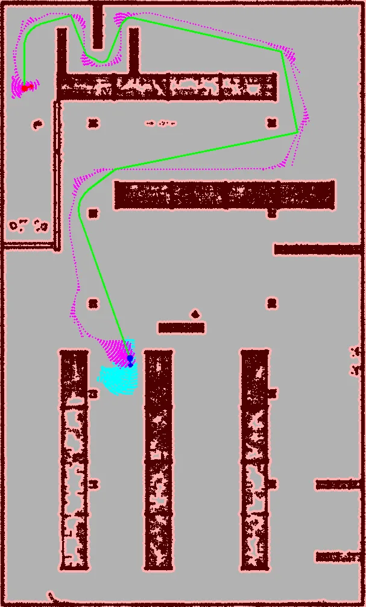
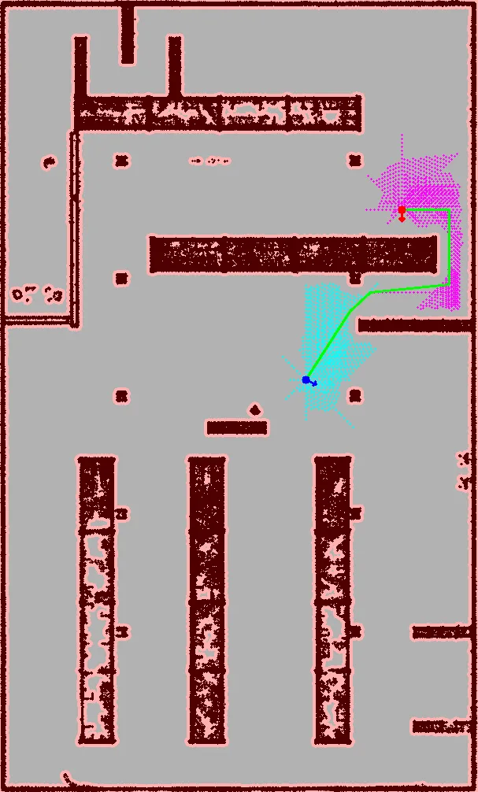
High-fidelity Unity twin of the BRACU Mongol-Tori rover with a MuJoCo physics backend, URDF joints and custom mesh collisions for the rocker-bogie suspension; tied to a ROS 2 workspace so autonomy edge cases are validated virtually before hardware.
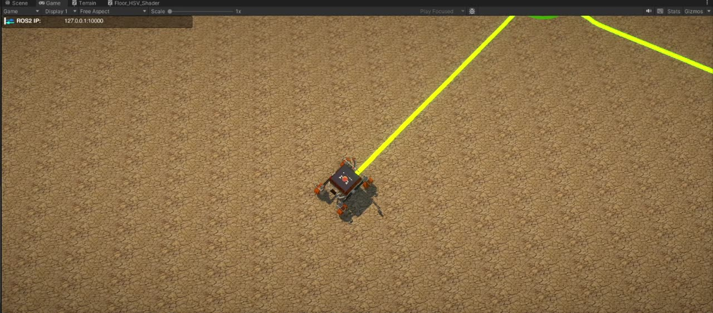
Artificial-potential-field planner over raw LiDAR point clouds that estimates terrain slope and isolates high-risk zones for safe waypoint traversal on rough ground.
In-vehicle recording stack with supervisor and watchdog, PPK-corrected INS trajectories, a remote export pipeline that hashes hundreds of GB where they live, and a semi-automatic 3-D labelling pipeline lifting foundation-model segmentation into the LiDAR cloud. Private repository.
The CV and this page say the same things; the CV has the detail.